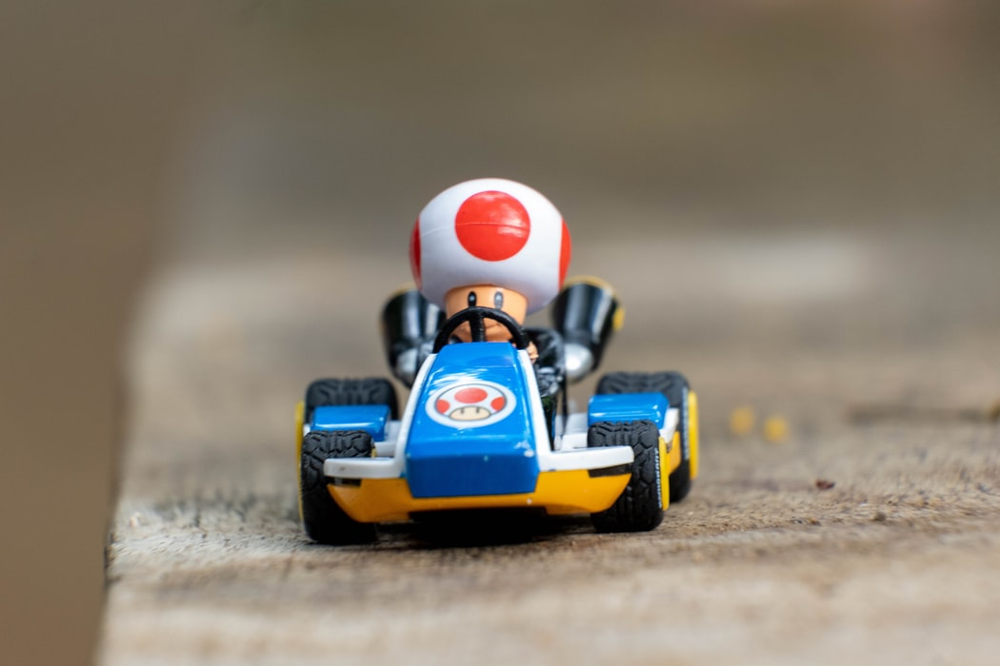

최적화 드리프트 기술
최적화 드리프트 기술이란 감속을 최대한 안 받도록 즉, 얇게 드리프트를 넣는 기술이다.
비틀기, 톡톡이, 뉴커팅과 같은 고난이도 기술은 아니지만 최적화 드리프트만 잘해도 공방에서 1등을 하는데 문제가 없을 정도로 카트라이더에서 가장 중요하다가 할 수 있는 기술이다.
또한 타임어택 모드에선 좀 더 빠른 기록을 내기위해 이 최적화 드리프트를 많이 사용한다.
최적화 드리프트만 잘익힌다면 상위 기술인 톡톡이 드리프트를 익히는데 좀 더 수월할 것이다.
많은 초보유저들을 보면 최적화 드리프트 조차 제대로 못하는 유저들이 많은데 기초에선 가장 중요한 기술인 만큼 제대로 익혀보자.